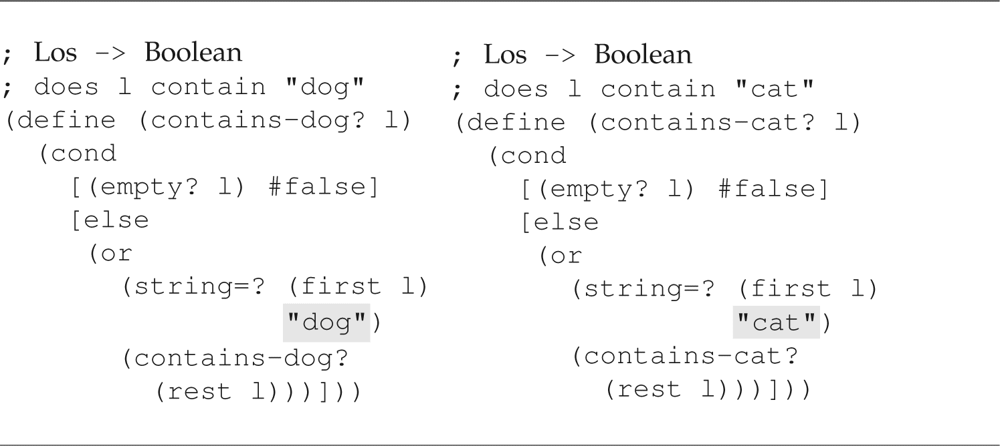
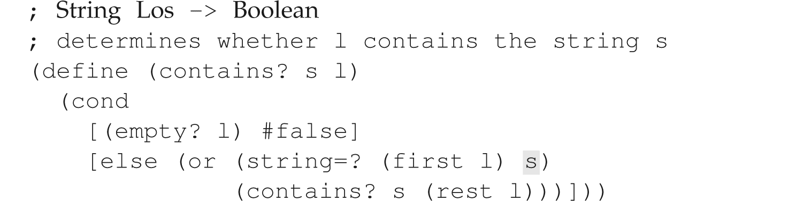
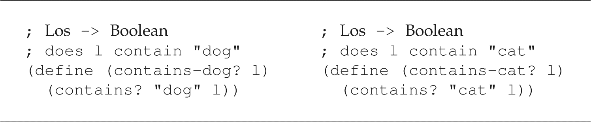
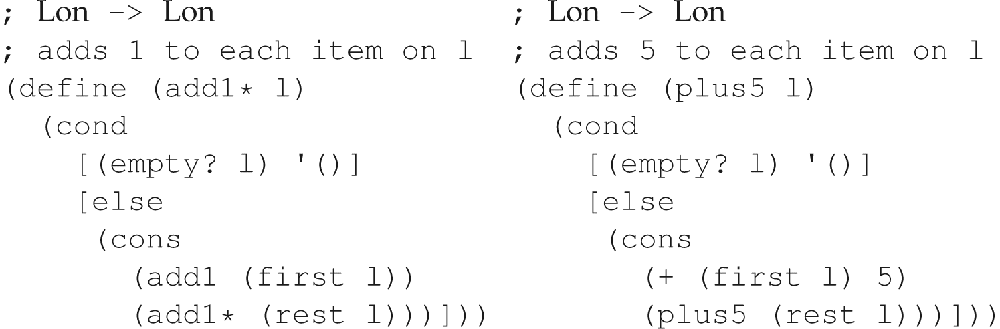

14.1 Similarities in Functions
The design recipe determines a function’s basic organization because the template is created from the data definition without regard to the purpose of the function. Not surprisingly, then, functions that consume the same kind of data look alike.
Consider the two functions in figure 86, which consume lists of strings and look for specific strings. The function on the left looks for "dog", the one on the right for "cat". The two functions are nearly indistinguishable. Each consumes lists of strings; each function body consists of a cond expression with two clauses. Each produces #false if the input is '(); each uses an or expression to determine whether the first item is the desired item and, if not, uses recursion to look in the rest of the list. The only difference is the string that is used in the comparison of the nested cond expressions: contains-dog? uses "dog" and contains-cat? uses "cat". To highlight the differences, the two strings are shaded.

Figure 86: Two similar functions
Good programmers are too lazy to define several closely related functions. Instead they define a single function that can look for both a "dog" and a "cat" in a list of strings. This general function consumes an additional piece of data—the string to look for—and is otherwise just like the two original functions:

If you really needed a function such as contains-dog? now, you could define it as a one-line function, and the same is true for the contains-cat? function. Figure 87 does just that, and you should briefly compare it with figure 86 to make sure you understand how we get from there to here. Best of all, though, with contains? it is now trivial to look for any string in a list of strings and there is no need to ever define a specialized function such as contains-dog? again.

Figure 87: Two similar functions, revisited
What you have just witnessed is called abstraction or, more precisely, functional abstraction. Abstracting different versions of functions is one way to eliminate similarities from programs, and as you will see, removing similarities simplifies keeping a program intact over a long period.
Computer scientists borrow the term “abstract” from mathematics. There, “6” is an abstract concept because it represents all ways of enumerating six things. In contrast, “6 inches” or “6 eggs” are concrete uses.
Exercise 235. Use the contains? function to define functions that search for "atom", "basic", and "zoo", respectively. 
Exercise 236. Create test suites for the following two functions:

Then abstract over them. Define the above two functions in terms of the abstraction as one-liners and use the existing test suites to confirm that the revised definitions work properly. Finally, design a function that subtracts 2 from each number on a given list.